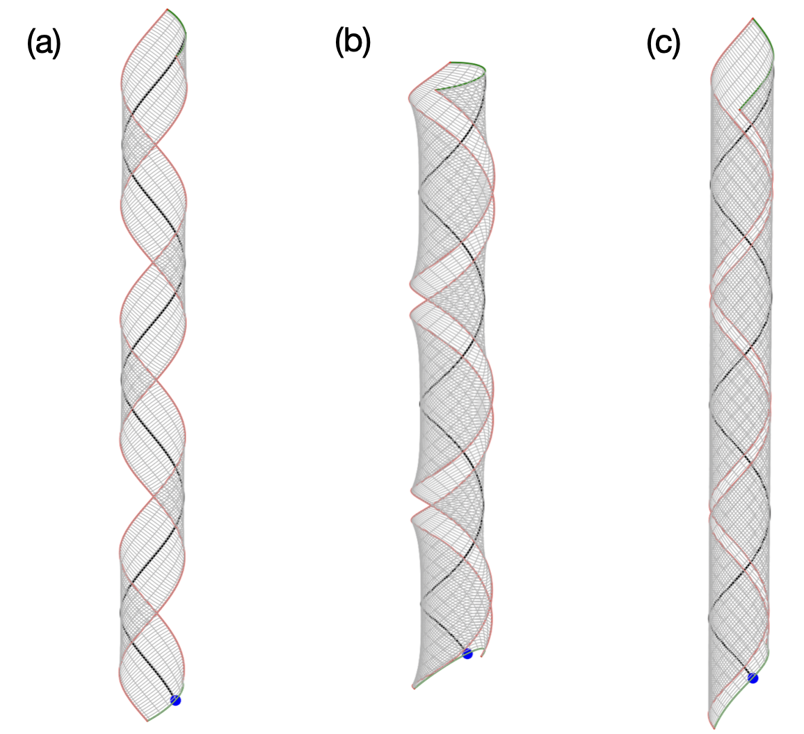
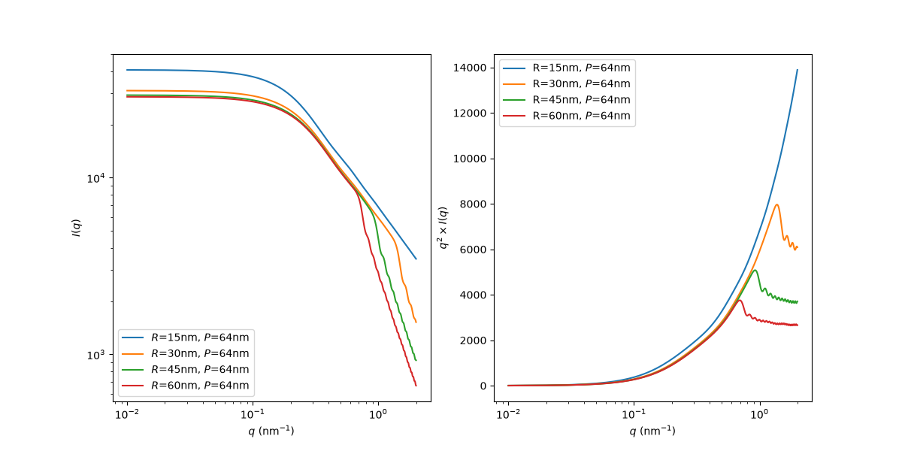
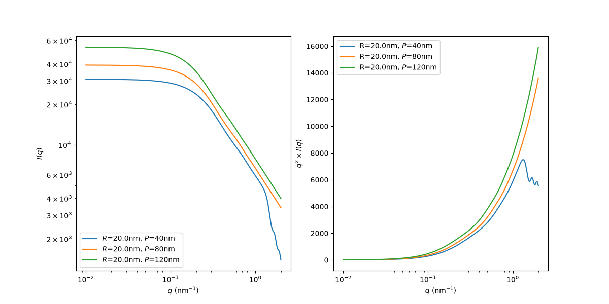
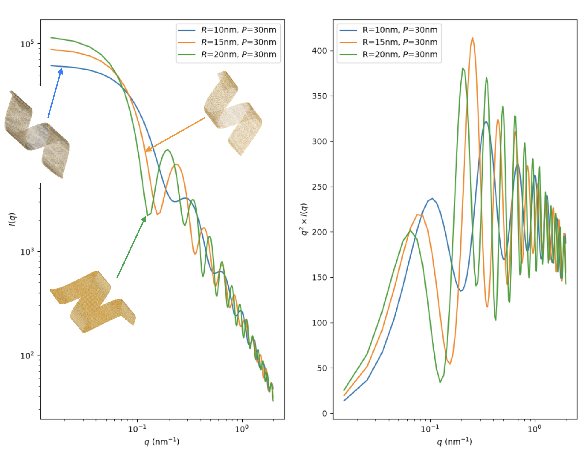
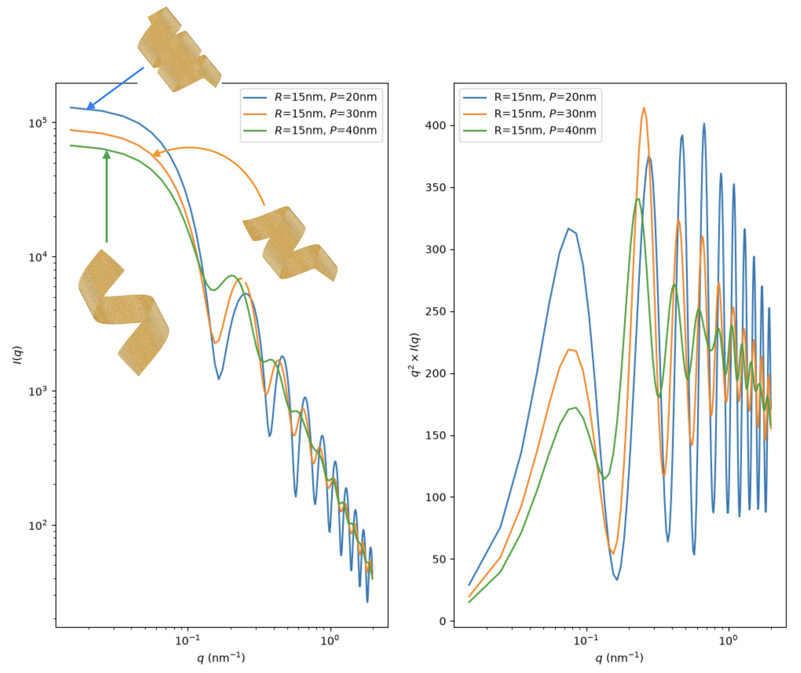

Updates#
Issues with the narrow narrow-ribbon approximation#
The configurations for helicoidal ribbons generated by my earlier code was based on the narrow-ribbon approximation, as is conventional in almost all continuum theories (see, e.g. Grossman et al). I refer to narrowness here with respect to the radius of curvature, i.e. the width of the ribbon is small compared to the circumference of the cylinder it wraps around.
This assumption leads to the edges of the ribbon lifting away from the cylinder surface when the ribbon’s width becomes comparable to the circumference of the cylinder, as is the case in Austin’s manuscript where the width is \(\approx 15\) nm and the radius of curvature \(\approx 20\) nm. Compare a narrow vs wide ribbon in panels (a) and (b) in the figure below. This issue is not equivalent to the width being above or below a certain critical width (like in our PNAS paper), as we are not solving an elasticity problem; rather we are geometrically generating conformations given the curvatures along the centerline.
Solution. The Ribbon class has been reimplemented to handle wide as well as narrow ribbons. This has been done by changing the implementation to that of a translation surface. These are surfaces generated by translating one curve over another. In case of a helicoid, the surface is generated by first creating the centerline in the form of a helix and then translating another helix with opposite handedness at right angles to the centerline helix. Each translation is also accompanied by a corresponding rotation in the Darboux frame. While conceptually simple, the implementation took me a lot of effort as visualizing angles between helices is hard, especially with Matplotlib in 3D.
{kind=link}

Additional advantages.
Thankfully, the reimplementation as a translation surface allows us to access configurations of NPLs below critical width, where the Gauss curvature is still non-zero. These have been observed in MD simulations when increasing with as one transitions from helicoid to a helical ribbon.
The current implementation also allows surface generation by translating an arbitrary curve along the centerline. This includes spirals, conical helices (reducing radius of curvature along the centerline), etc.
A condition for self-overlap detection at a given radius and pitch of a helical ribbon has also been added.
GitHub Please take a look at the GitHub repo if you are interested.
SAXS form factor from Hamley#
Why train a network when an analytical solution is available? Let’s compare the accuracy of the analytical form factors for helical ribbons.
Ian Hamley has two papers on the form factor of helical ribbons. The key results of first paper is contained within the second.
I. W. Hamley, Form factor of helical ribbons Macromolecules 41, 8948 (2008).
I. W. Hamley, V. Castelletto, Small-angle scattering studies on diverse peptide-based nanotube and helical ribbon structures reveal distinct form and structure factors Journal of Appl Crystallography 58, 1311(2025).
In his 2025 paper, the form factor has an approximate expression (see eq 20) and a non-approximate one (see eq 19).
There is an error in the expression for \(\delta\) (see Fig. 9). It should be \(\delta = w/\cos \psi\) instead of \(\delta = w/\tan \psi\). Fig. 9 is in fact adapted from Chung et al (1993), where the expression is in fact correct. Nevertheless, it wasted a lot of my time to realise that there is an error and to rederive the expression and ponder over its implications. I do not know if the error carries over to the results in Hamley’s papers.
The non-approximate result in eq 19 is in fact a triple integral performed numerically. I found it exceedingly slow to be of any practical use. The triple integral evaluation involves nested calls to the adaptive QUADPACK routines (which are already in Fortran). Even though it could be sped up using Fortran or C (I did it in Python), it is very unlikely to be fast enough. In my tests, each value to \(q\) requires more than 3000 function evaluations! Having wasted sufficient amount of time, I abandoned this approach.
The approximate result in eq 20 is better, but still slow. Moreover, it appears not to directly involve the length of the NPL. Furthermore, there is a dependence on the number of terms in the infinite summation. Based on the approximation that only the intensities at the layer lines count, I have used \(n = pq_{\mathrm{max}}/\pi\). The figure below shows results for varying pitch and radius at a fixed width of 15 nm.
{kind=link}

{kind=link}

Do you think these curves look reasonable? Let’s compare with debyer.
SAXS form factor from debyer#
Typical NPL dimensions as per Austin’s manuscipt: “The nanoplatelets have average lateral dimensions of 65.5 ± 11.4 nm by 13.9 ± 5.3 nm, as measured by TEM …”. I am assuming that the length referred to is the length of the helix (as can be measured with a ruler from an image) and not its contour length, otherwise, the NPL is too small. In this case, we need the contour length – this is the length of the flat NPL that gets deformed to a helical ribbon, likewise for the width. We always work with the dimensions of the reference object, never with the current configuration. If the helix length is \(L_H\), the contour length is \(L = (L_H - \delta)\sqrt{4\pi^2 R^2 + P^2}/P\), where \(R\) is the radius of the helix, \(P\) is its pitch, and \(\delta\) is the width of the ribbon along the axis.
Note
For CdSe NPLs, the Ribbon class automatically orients the crystal [110] direction along the lines of the principal curvatures, consistent with the given radius and pitch.
Below are results from Debyer for 3ML CdSe NPLs at \(L_H = 64\)nm and \(w = 15\)nm. Visually comparing with the TEM images in the literature, I do think that the width needs to be larger as it seems there is significant wraparound. Of course, simple visual inspection is error-prone.
{kind=link}

Effect of changing radius at constant pitch. Do note that since \(L_H\) is constant, \(L\) is changing for each case. The realtively poor quality snapshots are from Ovito, the better looking ones are from ChimeraX.#
{kind=link}

Effect of changing pitch at constant radius.#
Hamley vs debyer
I think there are qualitative similarities between Hamley’s results and direct calculation from debyer, but the differences are significant enough to conclude that the form factor equations are insufficient.
Coarse graining#
Nevertheless, even debyer is slow when it comes to generating 100 000 form factors from XYZ files! Typical number of atoms for 3ML CdSe in each XYZ file is 150 000.
Since the Ribbon class has an underlying mesh, is it okay to replace a unit cell (incluing the width) to a single point in the center? For a 3ML CdSe NPL, this reduces 7 layers to a single layer. In this case, if we are bothered by the \(f_i\) atomic scattering factors for SAXS, do we simply sum up the \(f_i\)s of the unit cell? On the other hand, can we just use the bulk scattering factor for CdSe?
Polydisperse supensions with HOOMD#
Note
This is required only for structure factor.
How to handle polydispersity? Given the very low volume fraction of NPLs, we cannot even simulate two NPLs of experimental dimensions using MD.
But we can use HOOMD-blue for hard particle Monte Carlo. Here is the workflow:
Treat NPLs as hard particles. No interactions as of now, but can be put in later as simple Lennard-Jones type between the centers of the NPLs.
The Ribbon mesh is by definition a union of convex polyhedra. So NPLs are represented as mesh objects.
HOOMD performs hard particle Monte Carlo to generate non-overlapping configurations at a certain volume fraction.
Use debyer on the mesh to central unit cell atom representation to calculate the overall intensity.
Configurations for training neural networks#
Moving forward, I need to know the ranges for each of the following variables to generate, say around 100 000 configurations of single 3ML CdSe NPLs. We will assume a uniform distribution for each of the vaiables.
Requirements
I need the ranges of the following quantities.
Length of the NPL in flat reference state. The length of the helix will also work.
Width of the NPL in flat reference state.
Radius of the helical ribbon formed by rolling from the flat reference configuration.
Pitch
Whether the configurations include helicoids and flat configurations. In experiments, is it typically the case that all NPLs are helical ribbons, or some are helicoids?
Q values. I am assuming 0.01 to 1 nm\(^{-1}\) will be sufficient.